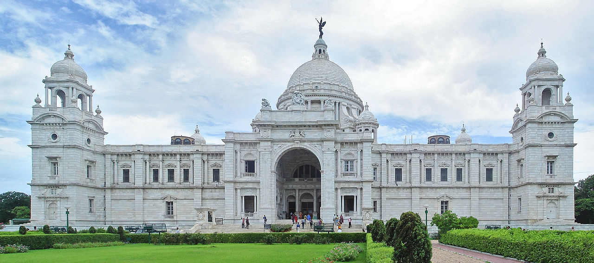

ALIPORE ZOOLOGICAL GARDENS

(Timing: 9:30 a.m.-5:00 p.m. Fees: Rs.20/person)
|  | VICTORIA MEMORIAL |
| The Victoria Memorial (Victoria Memorial Hall) is a large marble building in Kolkata, West Bengal, India which was built between 1906 and 1921. It is dedicated to the memory of Queen Victoria (1819–1901) and is now a museum and tourist destination under the auspices of the Ministry of Culture.The Memorial lies on the Maidan by the bank of the Hooghly river, near Jawaharlal Nehru road. In January 1901, on the death of Queen Victoria, George Curzon, 1st Marquess Curzon of Kedleston and Viceroy of India, suggested the creation of a fitting memorial. He proposed the construction of a grand building with a museum and gardens. Curzon said,
"Let us, therefore, have a building, stately, spacious, monumental and grand, to which every newcomer in Calcutta will turn, to which all the resident population, European and Native, will flock, where all classes will learn the lessons of history, and see revived before their eyes the marvels of the past."
The Prince of Wales, later King George V, laid the foundation stone on 4 January 1906 and it was formally opened to the public in 1921.In 1912, before the Victoria Memorial was finished, King George V announced the transfer of the capital of India from Calcutta to New Delhi.Thus, the Victoria Memorial was built in what would be a provincial city rather than a capital.
(Timing: 10:00 a.m.-5:00 p.m. except Sunday,Monday Fees: Museum- Rs.10/person-Indian Rs.150/person-Foreigners;Garden- Rs.4/person) |
EDEN GARDENS |
|
| Eden Gardens is a cricket ground in Kolkata, India. It is the home of the Bengal cricket team and the Indian Premier League's Kolkata Knight Riders, as well as being a venue for Test, One Day International and Twenty20 International matches. The largest cricket stadium in India by seating capacity, it is widely acknowledged to be one of the most iconic cricket stadiums in the world. Eden Gardens has been called "cricket's answer to the Colosseum".Established in 1864, Eden Gardens currently holds 66,349 people following renovations for the Cricket World Cup 2011; a capacity down from an estimated 100,000 before the upgrade. Before the 1987 World Cup, the capacity was said to be approximately 120,000; however, no official figures have been recorded. But six time reached hundred thousands plus attendance. Before 1984 both cricket and derby football matches were played in Eden Garden. The stadium is in the B. B. D. Bagh area of the city, near the State Secretariat and Calcutta High Court. |
MISSIONARIES OF CHARITY(MOTHER'S HOUSE) |
|
| Missionaries of Charity is a Roman Catholic Latin Rite religious congregation established in 1950 by Mother Teresa. It consists of over 4,501 religious sisters and is active in 133 countries. Members of the order designate their affiliation using the order's initials, "M.C." A member of the Congregation must hear to the vows of chastity, poverty, obedience, and the fourth vow, to give "wholehearted free service to the poorest of the poor."
|
INDIAN MUSEUM |
|
| The Indian Museum is the largest and oldest museum in India and has rare collections of antiques, armour and ornaments, fossils, skeletons, mummies, and Mughal paintings. It was founded by the Asiatic Society of Bengal in Kolkata, India, in 1814. The founder curator was Dr Nathaniel Wallich, a Danish botanist.
It has six sections comprising thirty five galleries of cultural and scientific artifacts namely Art, Archaeology, Anthropology, Geology, Zoology and Economic Botany. This multipurpose Institution with multidisciplinary activities is being included as an Institute of national importance in the seventh schedule of the Constitution of India.It is one of oldest museums in the world. This is an autonomous organization under Ministry of Culture, Government of India. The present Director of the Indian Museum is Dr. B. Venugopal.
(Timing: March to November-10:00 a.m.-5:00 p.m. December to February-10:00 a.m.-4:30 p.m. Fees: Rs.10/person-Indians Rs.150/person-Foreigners) |
SHAHEED MINAR |
|
| The Shaheed Minar (Martyrs' Monument), formerly known as the Ochterlony Monument), is a monument in Kolkata that was erected in 1828 in memory of Major-general Sir David Ochterlony, commander of the British East India Company, to commemorate both his successful defense of Delhi against the Marathas in 1804 and the victory of the East India Company’s armed forces over the Gurkhas in the Anglo-Nepalese War. The monument was constructed in his memory. It was designed by J.P. Parker and paid for from public funds. In August 1969, it was rededicated to the memory of the martyrs of the Indian freedom movement and hence renamed the "Shahid Minar," which means "martyrs monument" in both Bengali and Hindi, by the then United Front Government in memory of the martyrs of the Indian independence movement. The present government has decided to illuminate the tower during evenings and allow visitors to the top. The last persons who went up there were former governor Gopal Krishna Gandhi and his family. |
RAJ BHAVAN |
|
| Raj Bhavan is the official residence of the Governor of West Bengal, located in the state' capital city Kolkata. Built in 1803, it was known as the Government House in the pre-independence days.
Later after the transfer of power from the East India Company to the British Crown in 1858 it became the official residence of the Viceroy of India, shifting here from the Belvedere Estate. With the shifting of capital to Delhi in 1911 it became the official residence of Lieutenant Governor of Bengal. Since independence in 1947 it serves as the official residence of the Governor of West Bengal and came to be known as the Raj Bhavan, a name it shares with the official residences of other states' governors.
|
BIRLA PLANETARIUM |
|
| The Birla Planetarium in Kolkata, West Bengal, India, is a single-storeyed circular structure designed in the typical Indian style, whose architecture is loosely styled on the Buddhist Stupa at Sanchi. Situated at Chowringhee Road adjacent to the Victoria Memorial, St. Paul's Cathedral, and the Maidan in South Kolkata, it is the largest planetarium in Asia and the second largest planetarium in the world. (Timing: 12:00 p.m.-6:30 p.m. Fees: Rs.40/person) |
ALIPORE ZOOLOGICAL GARDENS |
|
| The Alipore Zoological Gardens (also informally called the Alipore Zoo, Calcutta Zoo or Kolkata Zoo) is India's oldest formally stated zoological park (as opposed to royal and British menageries) and a big tourist attraction in Kolkata, West Bengal. It has been open as a zoo since 1876, and covers 18.81 ha (46.5 acres). It is probably best known as the home of the now expired Aldabra giant tortoise Adwaita, which was reputed to have been over 250 years old when it died in 2006. It is also home to one of the few captive breeding projects involving the Manipur brow-antlered deer.
The zoo had its roots in a private menagerie established by Governor General of India, Richard Wellesley, established around 1800 in his summer home at Barrackpore near Kolkata, as part of the Indian Natural History Project.
(Timing: 9:30 a.m.-5:00 p.m. Fees: Rs.20/person) |
 |